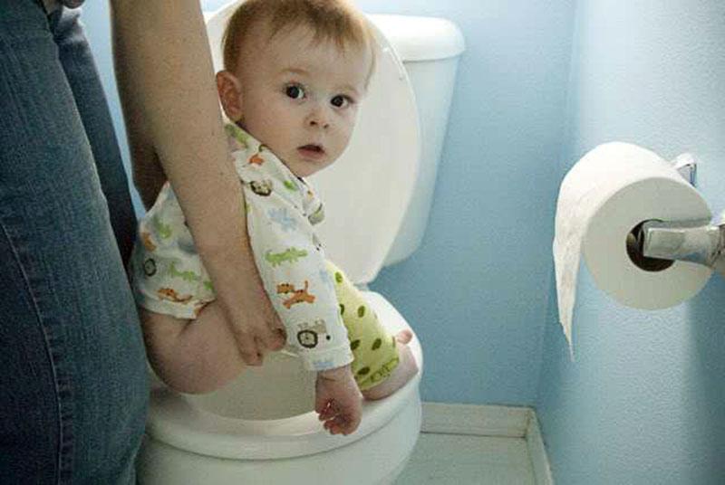
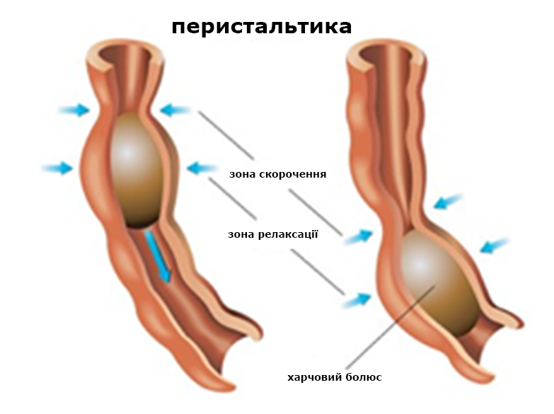
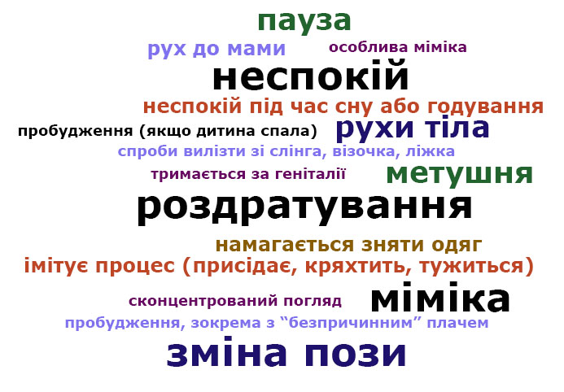
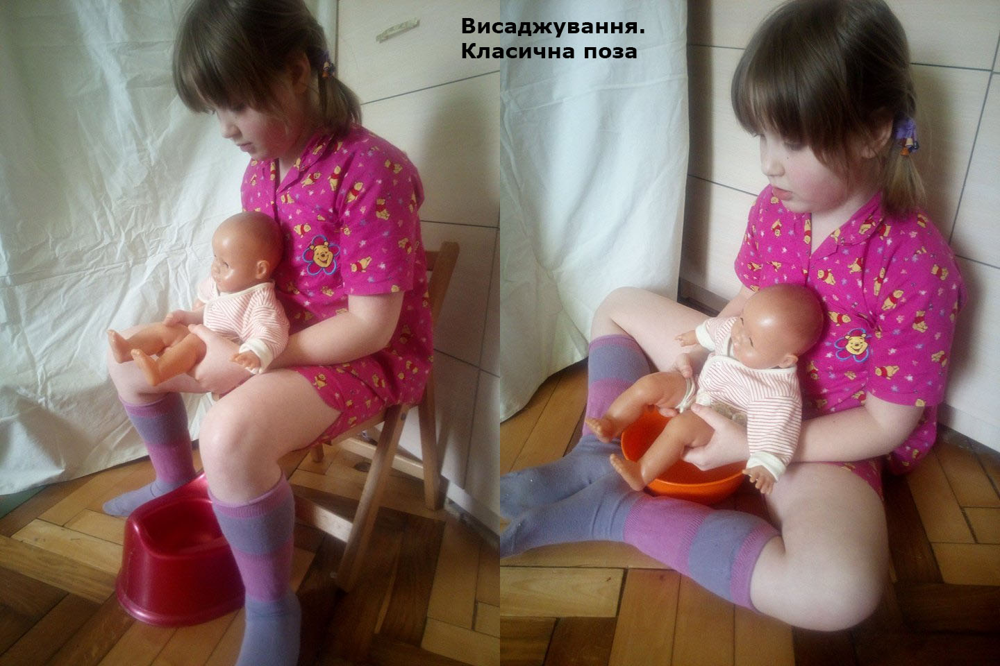
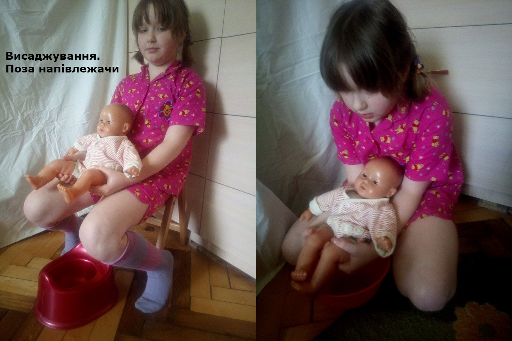
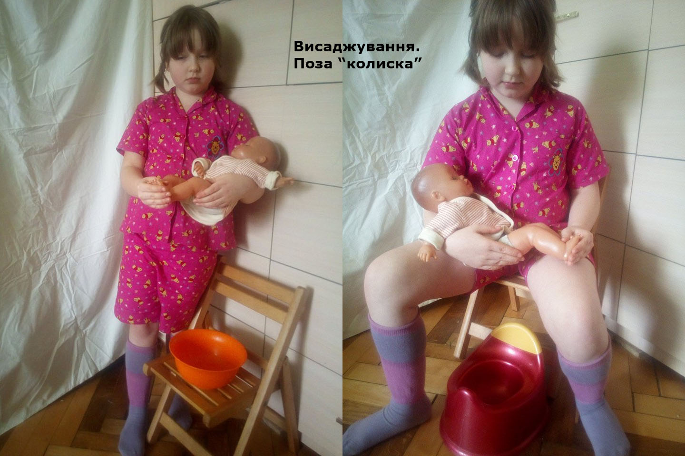

Автор: Ольга Колодка
Як це робиться?
Головне – почати. Для того, щоб розуміти, коли варто висадити малюка, ми відштовхуємося від таких показників:
Загальнолюдські фізіологічні особливості та біоритми, які нам слід врахувати:

Отже, ми знаємо, що під час годування або безпосередньо після нього є потреба у висаджуванні.
Іноді зустрічаємо таке заперечення: «Нічого подібного, моя дитина часто плаче, але це не пов’язано з туалетом, тому що в цей час вона не пісяє. Поїсть, і нервується, напевно, не наїдається.» Насправді дійсно не всі пісяють та какають безпосередньо під час або після годування. Дехто потребує кількахвилинного інтервалу (і він є більш-менш стабільний для цієї дитини), тому батьки можуть не пов’язати ці 2 процеси. Щоб вивчити закономірності, які працюють в конкретної дитини, необхідно просто спостерігати за її ритмами.

Сигнали, які подають немовлята і діти трошки старшого віку (після 6 місяців) дещо відрізняються.
У новонароджених це:
У старших дітей, окрім вищезгаданого, додається:
Є багато ситуацій, коли ми не бачимо сигналів дитини, не знаємо інтервалів, а все одно виникає думка:
Це вмикається батьківська інтуїція, яка дозволяє нам зчитувати ті сигнали та розпізнавати ті біоритми дитини, які ми не усвідомлюємо, і це достовірні відчуття, які означають необхідність задовольнити потребу дитини (ласка, годування, сечовипускання/дефекація або все разом)
Коли ми розуміємо потребу у висаджуванні, просто допомагаємо дитині зайняти зручну для цього позу над мискою, ванною, умивальником, можна також додати супроводжуючі звуки чи жести з боку дорослого. Це допомагає зробити спілкування двостороннім – висаджування невдовзі стане можливим також і на прохання батьків.
Незалежно від пози важливим є:
Зручні положення для висаджування

Класична поза:

Напівлежачи (класична поза для новонароджених):

«Колиска»
Важливою особливістю цієї позиції є можливість одночасного годування грудьми і менша ймовірність розбудити дитину, завдяки чому її особливо зручно використовувати вночі.
Також дуже помічна вона тоді, коли починаємо практикувати висаджування не з народження, і дитина має заданий алгоритм подій під час нічних пробуджень – очікує, що її неприємні відчуття буде полегшено за допомогою годування; коли ці очікування не справджуються, малеча обурюється, протестує. Зокрема така поведінка дуже характерна починаючи з віку 3-4 місяців. Простий вихід в такому разі – прикласти дитя до грудей, висадивши під час годування.
Всі пози можна видозмінювати відповідно до своїх потреб.
Про корисні для висаджування атрибути та про вікові особливості читайте незабаром у третій частині.
Про речі-помічники і про вікові особливості читайте тут.
Про те, що таке висаджування і чому варто спробувати - тут.
Статтю редагувала Анна Гецки
Використана література:
Bauer, Ingrid. Diaper Free! The Gentle Wisdom for Natural Infant Hygiene.
Boucke, Laurie. Infant Potty Training.
Olson, Andrea Go Diaper Free: A Simple Handbook for Elimination Communication
Gross-Loh, Christine. The Diaper-Free Baby: The Natural Toilet Training
Josling, Charndra. Baby Wearing and Elimination Communication
http://tribalbaby.org/baby-wearing-and-elimination-communication